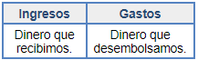
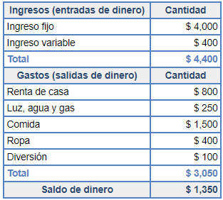

Tema 2: Características del presupuesto personal
Un presupuesto cubre las siguientes características:
| 1) | Un presupuesto puede hacerse de forma personal o familiar. |
|---|---|
| 2) | Comprende un periodo de tiempo; una semana, una quincena, un mes o un año. De ti depende el periodo que desees utilizar. Para tomar la decisión, te puede ayudar el tomar en cuenta la periodicidad con que recibes tus ingresos. |
| 3) | Tiene dos apartados importantes: Ingresos y gastos.  |
| 4) | Es necesario separar los gastos en diferentes rubros, es decir, clasificarlos. Aquí aprenderás a hacer esa clasificación. |
| 5) | Permite ver con anticipación el destino que le daremos a nuestros ingresos. |
¿Recuerdas lo que vimos en el módulo 2? Para facilitarte el logro de tus objetivos puedes utilizar el presupuesto. Aprender a hacerlo, te permitirá aprovechar tus recursos al máximo y estar consciente de lo que recibes y gastas.
A continuación se mostrará un ejemplo de la estructura de un presupuesto.
